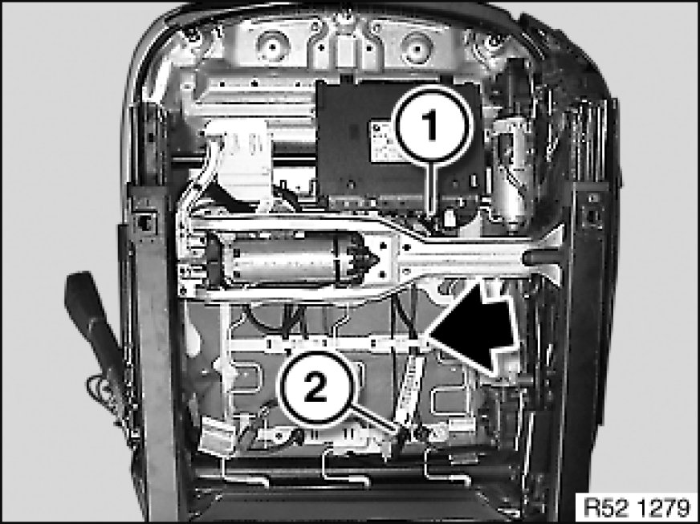
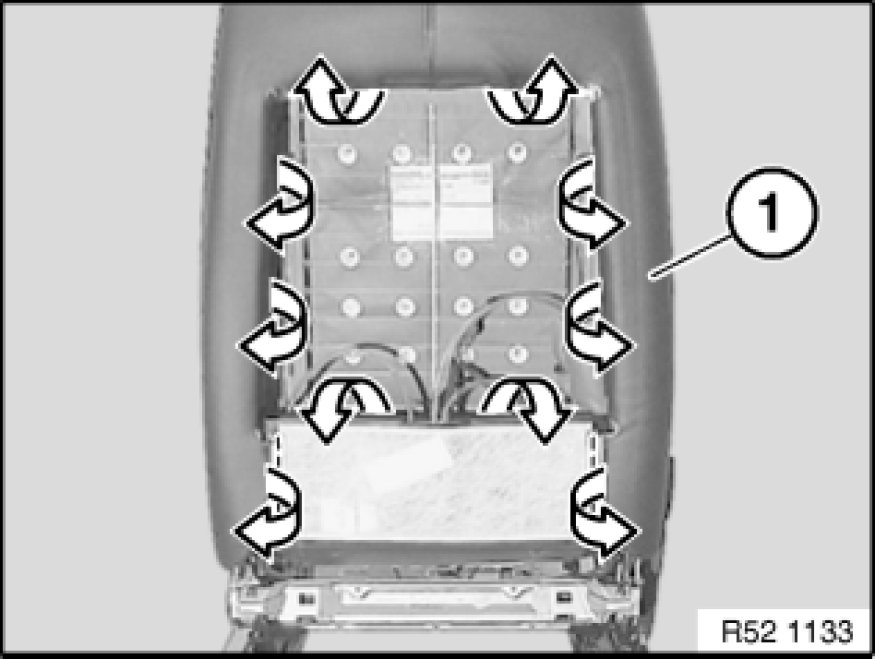
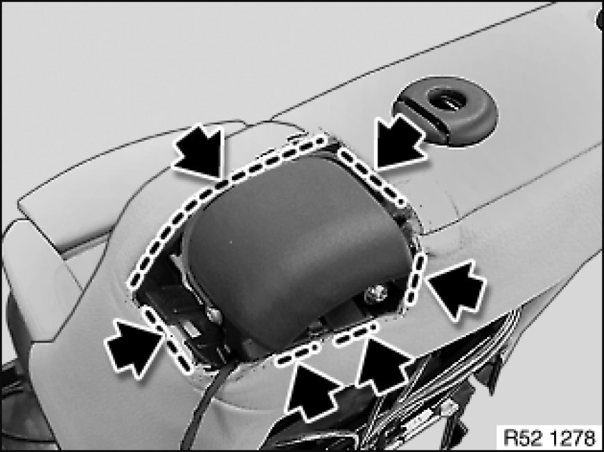
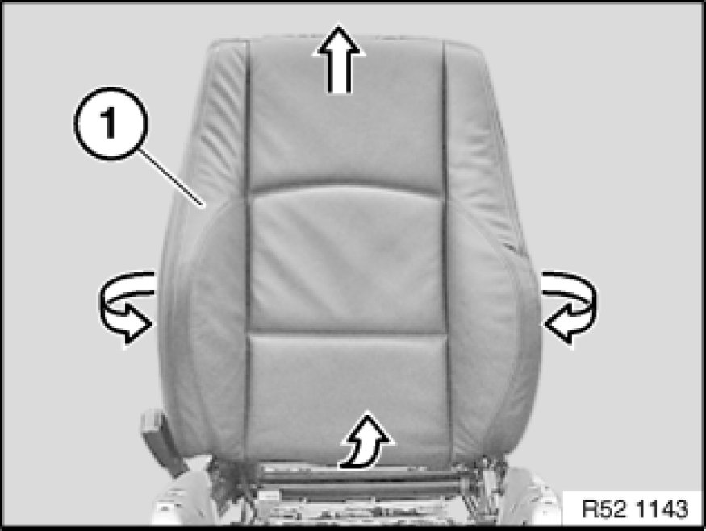
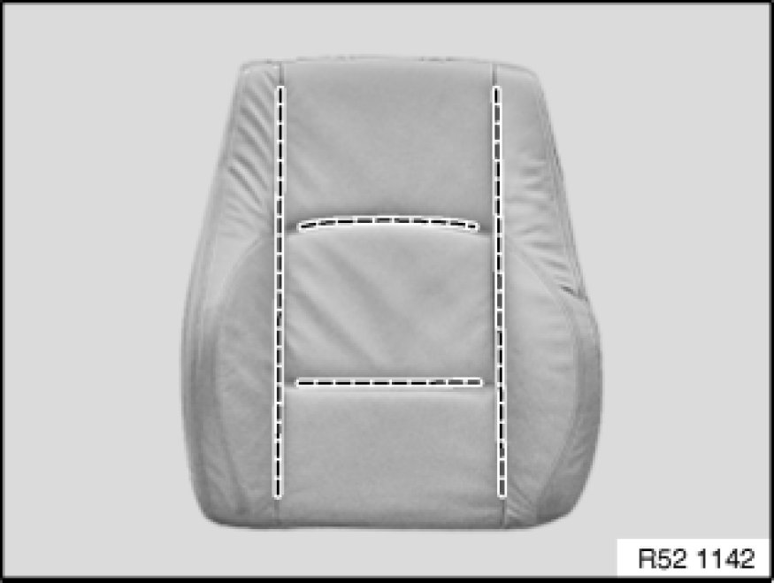
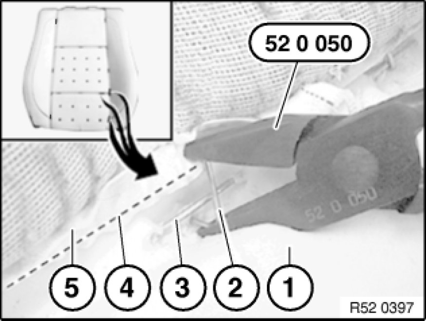
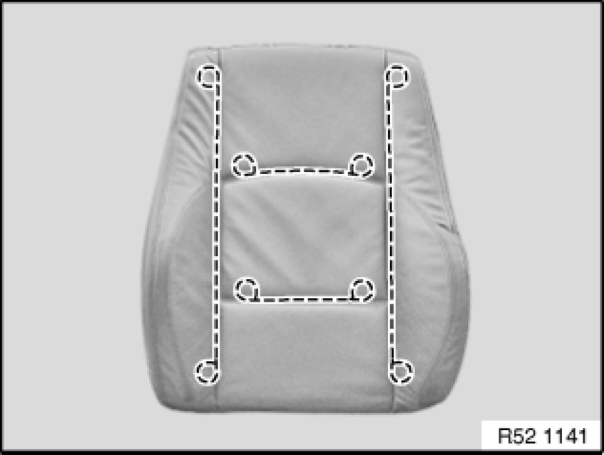

Replacing Backrest Cover on Front Left or Right Seat (Sports/Electric)
52 16 405 - Replacing backrest cover on front left or right seat (sports/electric)

Special tools required:
- 52 0 050 52 0 050 Pliers

Necessary preliminary tasks:
- Remove front seat Removing and Installing Left or Right Front Seat (Normal / Manual)
- Remove guide sleeves Replacing Guide Sleeves For Front Left or Right Head Restraint
- Remove cover for release mechanism Removing and Installing/Replacing Release Mechanism on Left or Right Front Seat

Version with seat heating only:
Unfasten plug connection (1) and disconnect.
Detach cable strap (2).
Release wiring harness from cable holders on seat mechanism.
Important!
Feed the wiring harness carefully through the seat and backrest mechanism as the edges of the frame can be sharp.

Detach backrest cover (1) from backrest frame.

Detach backrest cover in marked area.

Pull off backrest cover (1) with padding sideways and towards top from backrest frame.

Release all retainers in marked area.
Remove backrest cover from padding.
Note:
Remove all remnants of retainers from backrest cover and padding.

Installation:
Bend new retainer (2) with special tool 52 0 050 52 0 050 Pliers.
1. Padding
2. Retainer
3. Trim thread in padding
4. Trim wire in backrest cover
5. Back-rest cover

Replacement of backrest cover:
Pull trim threads out of backrest cover.
Cut new backrest cover to size and insert trim threads.